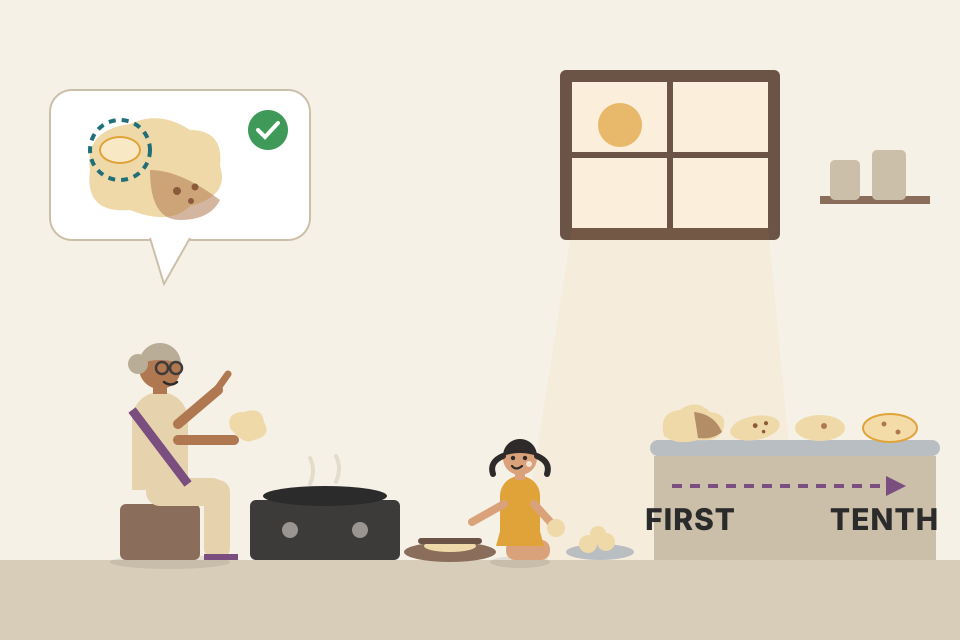
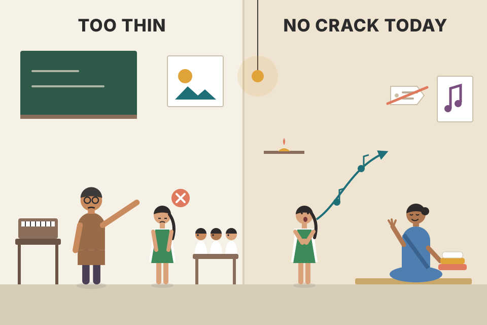
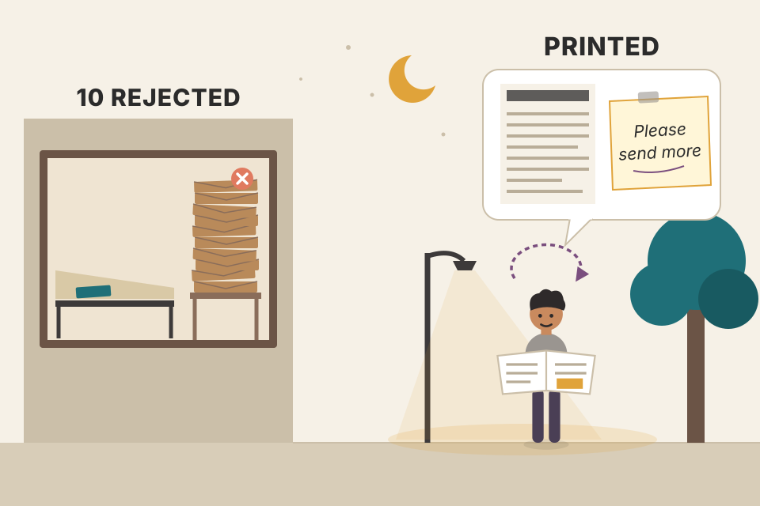
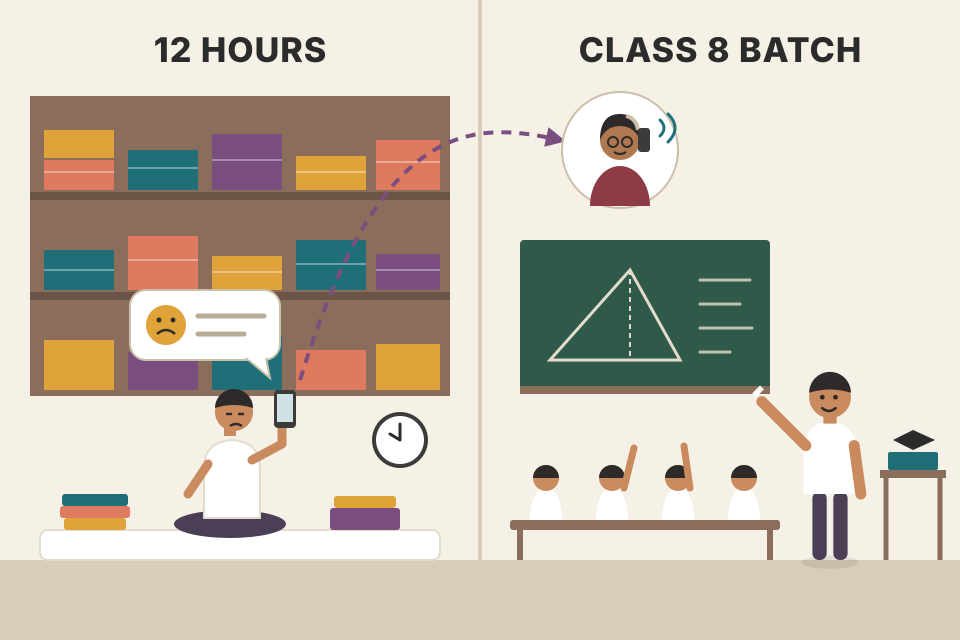
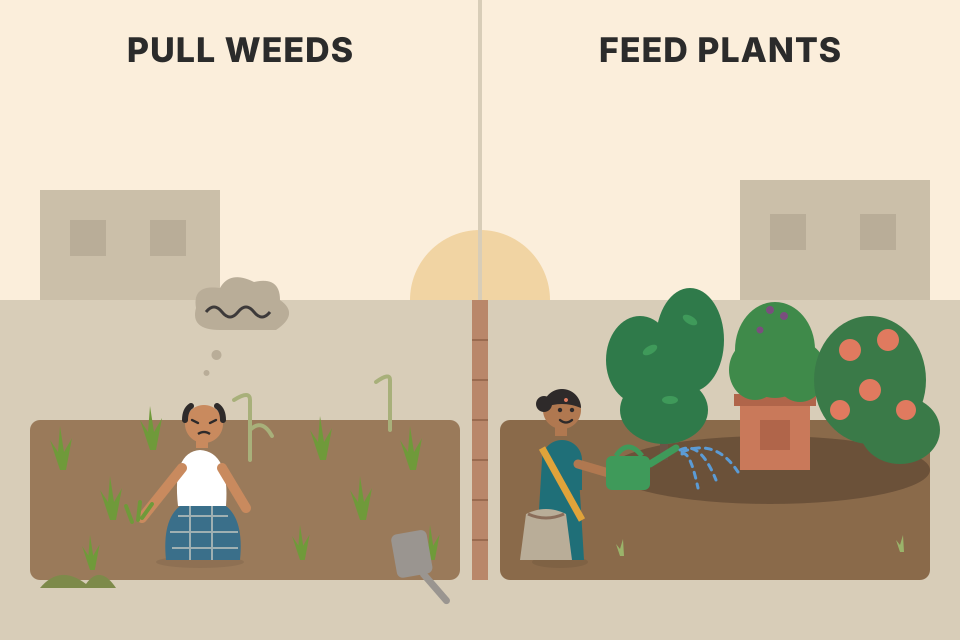
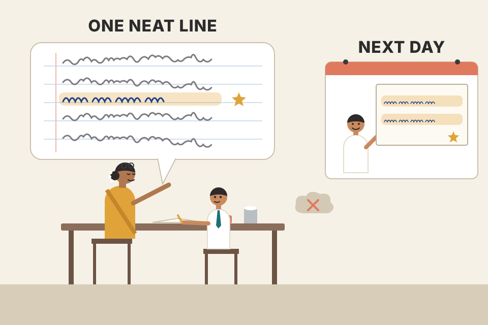
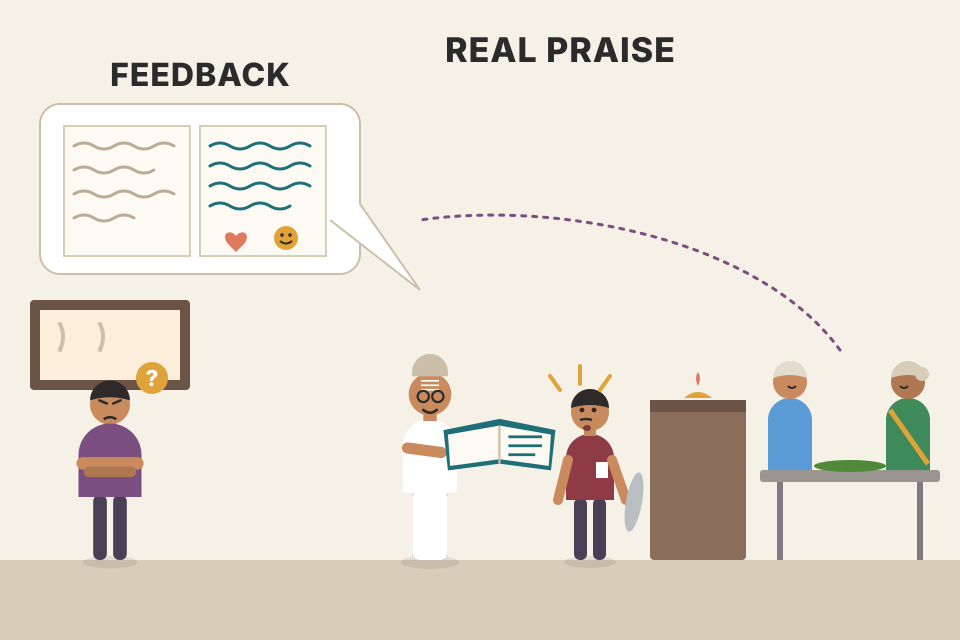
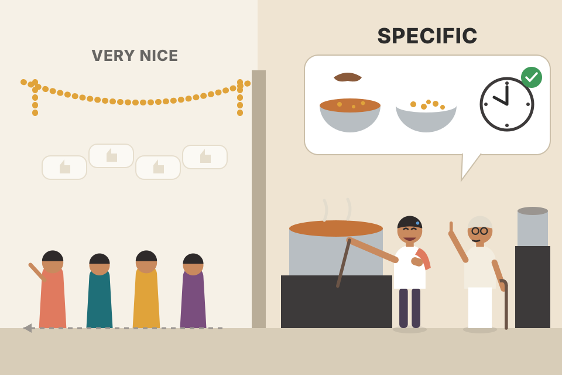
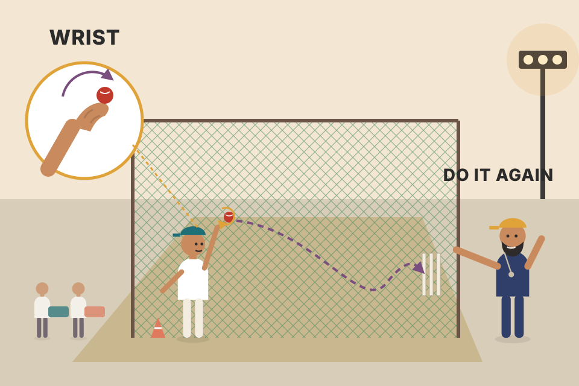

DALE CARNEGIE · HOW TO WIN FRIENDS · PART FOUR · CHAPTER 6 · PDF p220–225
How to Spur People On to Success
Catch people getting a little better, and say so, specifically and sincerely. Praise grows the behaviour you want; criticism only shrinks the person.
Carnegie opens with an animal trainer who rewards a dog the moment it shows the slightest progress, and asks why we treat people worse than dogs: the whip instead of the meat. He then shows three famous lives (Caruso, Dickens and H. G. Wells) that turned on a few words of encouragement at the lowest point, and backs them with B. F. Skinner's finding that praised behaviour grows while ignored behaviour fades. Two ordinary cases bring it home: a father who stopped yelling at his children and started praising whatever they did right, and a manager who saved a young printer from being fired by telling him exactly why his work was the best in the shop. The chapter's sharpest point is about specific praise: it sounds sincere, where vague praise sounds like flattery. It ends with William James's claim that most of us use only a small part of our powers, and that praise is one of the ways to wake them up.
Principle 6 of Part Four
Praise the slightest improvement and praise every improvement. Be "hearty in your approbation and lavish in your praise."
How the chapter fits together
pdf p220–225 · read this first
Where it sits. This is the sixth of nine chapters in Part Four, "Be a Leader: How to Change People Without Giving Offense or Arousing Resentment". The first five are about how to correct someone without hurting them: begin with praise (Ch.22), point out mistakes indirectly (Ch.23), talk about your own mistakes first (Ch.24), ask instead of ordering (Ch.25), and let the other person save face (Ch.26). This chapter turns the other way: once the correction is made, how do you get the person to keep improving? Answer: notice each step forward and reward it. The next chapter (Ch.28) goes one step further, giving people a good reputation to live up to.
It is also the "grown-up" version of two earlier ideas: don't criticize (Ch.1, where Skinner first appears) and give honest, sincere appreciation (Ch.2, where the steel boss Charles Schwab's phrase "hearty in approbation and lavish in praise" comes from). Here appreciation is aimed at one thing in particular: progress.
The argument as a chain. Each row builds on the one before it.
Problemwe try to change people with criticism→the whip, not the meat
ContrastPete Barlow's dogs→rewarded at the first sign of progress→they keep improving
HistoryCaruso's motherDickens's one editorWells's schoolmaster→a few words changed a life
EverydayRingelspaugh's childrenRoper's young printer→praise turned the trend
The keyspecific praise→sounds sincerevague praise → sounds like flattery
Bigger aimWilliam James: we are "half awake"→praise wakes hidden powers→Principle 6
Limitsonly from the heartnot a bag of tricksgains level off
About the title: "spur" here means urge on, the way a rider nudges a horse forward. Carnegie's point is that the best spur for people is not a sharp jab but a pat on the back at the right moment.
01 · THE OPENING CONTRAST
Pete Barlow's dogs: why do we give people the whip and dogs the meat?
pdf p220 · p225
Pete Barlowdog-and-pony actcircuses and vaudevillean old friend of Carnegie's
The scene. Pete Barlow spent his life touring with circuses and variety shows, training dogs (and ponies) to perform. Carnegie loved watching him break in a new dog. What struck him was the timing: the instant a dog did even a little better than before, Pete made a big fuss of it. He patted it, praised it, and gave it a piece of meat.
Nothing new. Carnegie is quick to say this is not Pete's invention. Animal trainers have worked this way for centuries.
The question Carnegie asks. If we all know this is how you change a dog's behaviour, why do we forget it the moment we try to change a person? He puts it as a set of swaps:
What we usually use on people
The whip. Condemnation. A list of what is still wrong.
What works even on dogs
The meat. Praise. A fuss made over the first small step in the right direction.
His conclusion, which becomes the chapter's principle: praise even the slightest improvement, because that is what makes the other person want to keep improving. Notice the word "slightest". He is not saying "praise people when they finally get it right". He is saying praise the first wobbly step, long before the result is good.
Praise as sunlight. Carnegie then quotes the psychologist Jess Lair (from his 1976 book I Ain't Much, Baby—But I'm All I Got; the book's footnote on pdf p225 gives the source). Lair's image is that we need praise the way plants need sun, yet most of us are quick to blow the cold wind of criticism on others and strangely slow to give them warmth.
"Praise is like sunlight to the warm human spirit."Jess Lair, quoted by Carnegie (pdf p220)
Carnegie's own life. He says that, looking back, he can see moments where a few words of praise sharply changed his whole future, and asks the reader whether they can say the same. Then he promises that history is full of examples of what he calls the "witchery" of praise, its almost magical effect. The next three plates are those examples.
Dated framing. Comparing people to circus dogs sounds odd today, and modern animal welfare would frown on some old circus acts. Carnegie's point survives the update: the same idea is now called positive reinforcement and is used by dog trainers, parents, teachers and good managers alike. People are not dogs, but the rule "reward the step you want repeated" applies to both.
Picture it

A grandmother teaching a five-year-old to make rotis. The first one is shaped like a map of India, half raw and half burnt. She doesn't point out the burnt bit. She says, "Look, this side puffed up! That's the hard part." The child grabs the next ball of dough. By the tenth roti it is nearly round, and the child is proud of every single one.
Where it breaks: the child already wants to learn, and the grandmother has endless patience. At work, the "dough" is someone's job and there are deadlines, so you may not get ten tries. Praise the step forward, but be honest that the end goal still has to be reached.
What's happening behind it
The book's explanation: praise makes people want to keep going and keep improving, and we need it to grow, as plants need sun. Criticism is the cold wind: it does not make the plant grow better, it just makes it shrink.
Beyond the book: what Pete Barlow did has a name in behavioural psychology, shaping, also called reinforcing "successive approximations". You cannot wait for a dog to do the full trick and then reward it, because it may never do it by chance. So you reward anything a little closer than last time, then raise the bar. People learning a skill are the same: a junior engineer will never write a perfect design doc on the first try, so if you only praise perfect docs, you never praise at all. Timing matters too: reward that comes soon after the behaviour links to it far more strongly than praise weeks later in a review.
At work
A junior engineer's PRs used to have no description at all. This week's PR has a two-line description: still thin, but a step. The whip reaction is to comment on what is still missing. Pete Barlow's reaction: "Thanks for the description, it made this much quicker to review. The 'why' line was exactly what I needed." The next PR will probably have a longer one. Ask for the testing notes after that.
Interview angle. "How do you mentor junior engineers?" A good answer describes small, visible steps and noticing each one, not one big annual verdict. Something like: "I pick one habit at a time, and I comment the first time I see it, even if it's not perfect yet."
Connects to
Skinner's reward-vs-punishment finding first appears in Ch.1 "Don't kick over the beehive"; the scientific side of this chapter is plate 5.
Why people crave praise at all (the desire to feel important): Ch.2 The Big Secret.
02 · A VOICE THAT "COULDN'T SING"
Caruso: the teacher who said no, and the mother who heard him getting better
pdf p220–221
Naplesa boy of tenfactory workerdreamed of singing
The situation. Many years ago, a ten-year-old boy worked in a factory in Naples. More than anything he wanted to be a singer.
The discouragement. His first music teacher told him flatly that he could not sing and had no voice at all. He compared the boy's voice to the rattle of wind through window shutters.
The encouragement. His mother, a poor woman from a farming family, did the opposite. She hugged him, told him she knew he could sing, and said she could already hear him getting better. And she backed her words with sacrifice: she went without shoes to save money for his music lessons.
The outcome. Carnegie says her praise and encouragement changed his life. The boy was Enrico Caruso, who became the greatest and most famous opera singer of his time.
Notice the exact words. The mother did not say "you are already a great singer", which would have been untrue. She said she could see an improvement. That is this chapter's principle in one family scene: praise the slightest progress, and mean it.
Dated wording. The book calls her a "poor peasant woman". Today we would say a poor working mother from a rural family; the point is that she had almost nothing and gave it to his lessons.
Beyond the book: the facts behind the story
Caruso was born in Naples in 1873 into a poor family and did work as a boy (biographies mention a mechanical workshop). His mother died when he was fifteen, before he became famous. The story of the discouraging teacher and the barefoot mother is the one Carnegie and many popular books tell; treat the details as a well-loved anecdote rather than a documented record.
Picture it

A girl in a small town sings bhajans at the temple. The music teacher at school tells her, in front of the class, that her voice is "too thin" and she should try drawing instead. That evening her mother, who cleans houses for a living, listens to her practise and says, "Today the high note didn't crack. Yesterday it did." She quietly skips buying herself a new sari that Diwali so the girl can join a weekend music class.
Where it breaks: encouragement cannot create a talent that is not there, and Caruso's story is told because he turned out to be extraordinary. For every Caruso, many encouraged children do not become stars. The praise still matters: it decides whether they keep trying long enough to find out.
What's happening behind it
From the book: two adults heard the same voice. The teacher judged the current level and found it lacking; the mother judged the direction and found it moving forward. The child kept going because of the second voice, not the first.
Beyond the book: for anyone early in learning a skill, the first experts they meet have a large effect on whether they continue. A harsh verdict at that stage often ends the attempt before the person has had time to improve; that is why music and sports coaches of beginners focus on progress rather than ranking. The mother's sacrifice also made the praise credible: words backed by cost are hard to dismiss as just being nice.
At work
Two senior engineers sit in a new hire's first design review. One says, "This won't work, the data model is wrong." The other says, "The data model is getting closer; the second version handles the multi-tenant case, which the first didn't. Let's look at the joins next." Both noticed the same flaw. Only the second leaves the new hire wanting to bring the next design to that room.
Connects to
Make the fault seem easy to correct (the mother's "you're getting better" does exactly this): Part Four, Ch.8.
Give the person a fine reputation to live up to ("I know you can sing"): Part Four, Ch.7.
03 · ONE EDITOR'S RECOGNITION
Charles Dickens: a hungry boy in a rat-infested warehouse, and the story that got accepted
pdf p221
Londonearly 1800s4 years of schoolfather in debtors' jailpaid nothing for the first story
Everything against him. A young man in London wanted to be a writer, and almost nothing was on his side:
He had managed only about four years of schooling in total.
His father had been thrown into prison because he could not pay his debts.
He often went hungry.
His job was sticking labels on bottles of boot polish ("blacking") in a warehouse full of rats.
At night he slept in a gloomy attic with two other boys from the London slums.
So little confidence. He was so unsure of his writing that he crept out late at night to post his first manuscript, so that nobody would see and laugh at him. Story after story came back rejected.
The turn. At last one story was accepted. He was not paid a single shilling for it. But one editor had praised it; one person had recognised his work. He was so moved that he walked the streets without aim, crying.
The outcome. Carnegie says that recognition changed his whole life; without it, he might have stayed in factory work for good. The young man was Charles Dickens.
Notice what the praise was worth. Zero money. The reward that changed Dickens's course was purely recognition: proof that someone whose opinion mattered had looked at his work and found it good. Carnegie wants the reader to see that praise can outweigh payment.
Dated wording. The book calls the other two boys "guttersnipes", an old, unkind word for street children. Today we would say children from the slums.
Beyond the book: the real timeline
Carnegie runs two moments of Dickens's life together. Dickens worked at Warren's Blacking warehouse at about age twelve (1824), while his father was in the Marshalsea debtors' prison. His first published story, "A Dinner at Poplar Walk", appeared unpaid in the Monthly Magazine in 1833, when he was about twenty-one and working as a reporter. So the blacking job had ended years before the acceptance; the hunger and shame of it, though, stayed with him all his life and fed novels like David Copperfield and Oliver Twist.
Picture it

A first-year engineering student in a hostel writes short stories in Telugu in a notebook he hides under his mattress. He sends ten of them to magazines; all ten come back or vanish. The eleventh is printed in a small Sunday supplement, with no fee, and the editor writes one line: "Please send more." He reads that line twenty times, walking around the campus at midnight.
Where it breaks: today a writer can post a story online and get likes in minutes, so a single editor's approval is rarer as a turning point. But the effect is the same, and maybe stronger: one specific word from someone who knows the craft counts for more than a hundred thumbs-ups.
What's happening behind it
From the book: Dickens had plenty of hardship but no recognition. The first sign that his work mattered to someone else gave him what money had not: a reason to believe in himself and keep writing.
Beyond the book: recognition is one of the strongest motivators in workplace research. Frederick Herzberg's studies (1959) listed it next to achievement as a factor that actually makes people satisfied and driven, while pay mostly just prevents complaints. Surveys of why employees leave keep finding "not feeling recognised" near the top. Dickens's tears were for exactly that.
At work
An intern has been sending design notes to the team channel for weeks; nobody replies. One day a principal engineer writes under one of them: "This is the clearest write-up of the retry problem I've read. Can we use it in the onboarding doc?" No promotion, no bonus. The intern will remember that sentence for years and write twice as much. If you are senior, your attention is a currency; spend it on newcomers' work.
Interview angle. "Tell me about someone who influenced your career." Many strong answers are a Dickens story: one person who noticed your work early. Name what they said specifically, and then what you do now for others because of it.
Connects to
Honest appreciation as the "big secret": Ch.2. Making people feel important: Part Two, Ch.6.
04 · A LETTER OF DESPAIR
H. G. Wells: a shop boy ready to give up, and the schoolmaster who told him he was meant for more
pdf p221–222
Londondry-goods (cloth) shop clerkup at 5 a.m.14-hour days2 years15-mile walk
The drudgery. Another London boy worked as a clerk in a dry-goods shop (one selling cloth and household fabrics). He had to be up at five to sweep the shop, then work about fourteen hours a day. He hated every hour of it.
Breaking point. After two years he could not take any more. One morning he left without breakfast and walked fifteen miles to see his mother, who was working as a housekeeper. He was desperate: he begged her, wept, and said he would kill himself if he had to stay in the shop.
The letter. He then wrote a long, miserable letter to his old schoolmaster, saying he was heartbroken and no longer wanted to live.
The reply. The schoolmaster gave him a little praise: he told the boy he really was very intelligent and suited to better things, and he offered him a job as a teacher.
The outcome. Carnegie says that praise changed the boy's future and left a lasting mark on English literature. He went on to write a huge number of bestselling books and earn over a million dollars by writing. He was H. G. Wells.
Two things the schoolmaster did. He gave words (you are clever and meant for better work) and he gave a way out (a real job). Praise alone might have cheered the boy for a day; praise plus a concrete next step changed his life. Carnegie stresses the praise, but the job offer is what made it believable.
Dated detail. "Made over a million dollars with his pen" was Carnegie's measure of success in 1936. Today we would more likely mention that Wells helped invent science fiction (The Time Machine, The War of the Worlds). The book's talk of suicide is also handled bluntly; see the note below.
Beyond the book: the facts, and a caution
Wells was apprenticed as a draper's assistant in Southsea in his early teens. His mother was housekeeper at Uppark, a country house in Sussex, and his old teacher was Horace Byatt of Midhurst Grammar School, who took him on as a student-assistant. Wells later wrote about the draper's years in novels such as Kipps.
A caution for today. If someone you know talks about wanting to die, kind words matter, but they are not enough on their own. Take it seriously, stay with them, and help them reach professional support (in India, for example, the government's Tele-MANAS helpline, 14416). The schoolmaster's lesson is to respond with warmth and a real path forward, never with dismissal.
Step through the three lives
Caruso, Dickens and Wells follow the same four beats. Step through and watch the pattern.
Picture it

A nineteen-year-old in Surat spends twelve hours a day folding saris in his uncle's shop and hates it. One night he messages his old maths teacher: "I think I've wasted my life." The teacher calls back within the hour: "You were the only one in your batch who could explain proofs to the others. I need someone to teach the Class 8 tuition batch on weekends. Will you?" Two years later he is studying for a B.Ed.
Where it breaks: the teacher had a job to offer; most of us don't. The praise part is always available, but if all we can give is words, we should be honest about it and help the person look for the next step rather than pretend the words are enough.
What's happening behind it
From the book: the boy was not short of effort; he walked fifteen miles before breakfast. He was short of anyone telling him his mind was worth something. A respected person's praise gave him a new picture of himself, and the teaching job let him act on it.
Beyond the book: at moments of despair, people often have a narrowed view of themselves ("I am only a shop boy"). Praise from someone credible widens it (you are clever, you are meant for more). Psychologists who study self-efficacy (Albert Bandura) list "verbal persuasion" by a trusted person as one of the four main ways people come to believe they can do something, alongside their own past successes, watching others succeed, and their physical and emotional state.
At work
In a 1:1, a support engineer says they are thinking of quitting tech because they "can't code like the product team". You have seen them write the best incident summaries in the company. The schoolmaster move: "Your incident write-ups are the ones everyone forwards. That's systems thinking, and it's rare. Want to shadow the SRE team for a sprint?" Specific praise, then a real door to walk through.
Interview angle. "Tell me about a time you helped someone through a hard patch." Say what you noticed about them, what you told them, and what concrete opportunity you opened. Show that you didn't stop at a pep talk.
Connects to
Make the person happy about doing what you suggest (the teaching offer did this): Part Four, Ch.9.
Be sympathetic to the other person's ideas and desires: Part Three, Ch.9.
05 · THE SCIENCE
B. F. Skinner: praise what's good and the good grows; ignore what's poor and it fades
pdf p222
After the three famous lives, Carnegie turns to science. He calls the idea of using praise instead of criticism the basic concept of the psychologist B. F. Skinner's teaching. (In 1981, when this edition was revised, Skinner was alive and still working, so the book calls him "contemporary"; he died in 1990.)
What Skinner showed, in experiments with animals and with people:
When you cut down criticism and emphasise praise, the good things people do are reinforced: they happen more.
The poorer things wither away ("atrophy") simply because nobody is paying attention to them.
This is a striking claim: you do not have to attack bad behaviour to shrink it. Starve it of attention, feed the good behaviour, and the balance shifts by itself.
Try it: where does your attention go?
Think of one person you work with (or a child at home). Over a normal week, roughly how many remarks do you make about what they do well, and about what they get wrong?
Picture it

Two gardens in a housing colony. In one, the owner spends every evening pulling weeds and grumbling, and never waters the plants he wants. In the other, the owner waters and feeds the tulsi, the roses and the curry leaf, and the plants grow so thick that the weeds get no light. A year later the second garden has fewer weeds, though she pulled far fewer.
Where it breaks: some weeds (and some behaviours) are dangerous and must be pulled at once: a safety violation, a data leak, cruelty to a colleague. Skinner's "ignore it and it fades" is for ordinary poor habits, not for things that hurt people while you wait.
What's happening behind it
From the book: behaviour that gets rewarded gets repeated; behaviour that gets no attention dies out. Criticism, oddly, is still attention, so it can keep the very behaviour alive that it attacks.
Beyond the book: in Skinner's terms, praise is positive reinforcement and the fading of an unrewarded behaviour is extinction. Two refinements from later research: (1) extinction often starts with a short burst (the child whose tantrum is ignored first screams louder), so the switch can look worse for a few days before it gets better; and (2) it works best when the person is also shown what to do instead, so there is a good behaviour available to reward. Parent-training programmes and classroom methods built on this, such as "catch them being good", are among the best-tested in psychology.
At work
A team where every retro is a list of what went wrong teaches people to avoid risk and hide problems. Try one retro where each person must name one thing a teammate did well, with an example, before any problems are raised. The problems still get discussed; the difference is which behaviours the team hears being noticed. Do the same in code review: an approval with one line on what was good ("nice use of the existing retry helper") reinforces the habits you want to see again.
Connects to
The first time Skinner appears, as the case against criticism: Ch.1.
Begin with praise and honest appreciation before any correction: Part Four, Ch.1.
06 · AT HOME
The Ringelspaugh family: from yelling to praise, and children who began doing things right on purpose
pdf p222
John RingelspaughRocky Mount, North Carolinaa student of Carnegie's course
The situation. Like many parents, John Ringelspaugh and his wife talked to their children mostly by yelling at them. And, as so often happens, each shouting session left the children a little worse, not better, and the parents too. There seemed to be no way out.
The move. Using what he was learning in the course, he and his wife decided to try praise instead of going on about the children's faults.
The hard part. He admitted it was not easy. When all you can see is what children are doing wrong, it is genuinely hard to find anything to praise. But they made themselves find something.
The result, step by step.
Within a day or two, some of the most upsetting behaviour simply stopped.
Then other faults began to disappear.
The children started building on the praise, and even went out of their way to do things right. The parents could hardly believe it.
It did not stay at that high forever. But when things settled, the new normal was far better than before. The parents no longer needed to react the old way, and the children were doing many more right things than wrong ones.
Carnegie's reading: all of this came from praising the slightest improvement instead of condemning everything the children did wrong. Notice the honest caveat in the story itself: the first burst of good behaviour levelled off. Praise is not a one-time miracle; it changes the baseline.
Which response? (Ringelspaugh's test)
Pick a response to see how Carnegie would judge it.
Picture it

Evening homework in a Chennai flat. For months the routine is: the mother checks the notebook, spots the messy handwriting, and the shouting starts; the boy sulks, and the next page is messier. One night she bites her tongue, finds the one neat line on the page and says, "This line looks like it's printed." The next evening he shows her two neat lines before she asks.
Where it breaks: a tired parent cannot find something to praise every single night, and children notice if the praise becomes automatic. The story works because the praise was real: the line really was neat. Hunting for something true is the hard part, and the part that matters.
What's happening behind it
From the book: yelling made both sides worse: a loop where the children's faults drew shouting, and the shouting produced more faults. Praise reversed the loop: noticed good behaviour came back, and there was less bad behaviour left to react to, so the parents calmed down too.
Beyond the book: family researchers call the yelling loop a coercive cycle (Gerald Patterson's work at the Oregon Social Learning Center): parent and child each escalate to get the other to back down, and both learn to escalate faster. The standard way out in parent training is exactly Ringelspaugh's: deliberately increase specific praise for wanted behaviour and reduce attention to minor misbehaviour. The plateau he describes is also what research expects; the gains hold if the praise habit holds.
At work
A team lead's stand-ups have become a daily list of blockers and missed estimates, and people now report as little as possible. The Ringelspaugh switch: for two weeks, before the blocker round, the lead names one thing someone moved forward yesterday, however small ("Priya's fix cut the flaky test count from 12 to 9"). It is hard at first, because the lead is used to scanning for problems. Expect a jump in openness, then a plateau, and a much better normal.
Interview angle. "How did you improve team morale?" Describe the loop you broke (what the team was used to hearing), the specific change you made, and an honest result, including that things levelled off. Interviewers trust a plateau more than a miracle.
Connects to
"Father Forgets", the parent who judged a child by an adult's yardstick: Ch.1.
Keith Roper and the young printer who was about to be fired
pdf p222–223
Carnegie says plainly: this works on the job too.
Keith RoperWoodland Hills, Californiaa company with its own print shopa new printer
The situation. Some printed material reached Keith Roper that was of unusually high quality. It had been done by a new employee in the company's print shop, a young man who had been struggling to settle into the job. His supervisor was unhappy with what he saw as the young man's negative attitude and was seriously thinking of firing him.
The move. When Roper heard this, he did not send a note or pass a message through the supervisor. He went to the print shop himself and talked to the young man. He told him:
how pleased he was with the work he had just received;
that it was the best work he had seen from that shop in some time;
exactly why it was better;
and how much the young man's contribution mattered to the company.
The result. Within days his attitude turned right round. He told several co-workers about the conversation, and that someone in the company really noticed good work. From then on he was a loyal, dedicated worker.
What made the difference. Same young man, same work; the supervisor saw an attitude problem, Roper saw a piece of excellent work and named it. A struggling new hire who believes nobody notices him behaves "negatively"; the same person, once seen, has every reason to care.
Step through the story
Picture it

A new waiter at a busy Udupi restaurant keeps mixing up orders, and the head waiter calls him lazy and wants him gone. One afternoon the owner notices that the table he served left a long, warm note in the feedback book about how patiently he explained the menu to an elderly couple. The owner walks over, shows him the note and says, "This is the kind of service I opened this place for. You took time with them when we were rushed." By the weekend the waiter is the first to arrive.
Where it breaks: the owner had a real, outstanding thing to point to. If the new hire's work had nothing good in it, inventing praise would be flattery, and he would sense it. Roper's move depends on looking hard enough to find the real good work first.
What's happening behind it
From the book: Roper's praise worked because it was specific (next plate), it came from someone senior who took the trouble to come in person, and it connected the work to the company ("how important his contribution was"). The young man had been feeling unseen; now he felt important, and he told others.
Beyond the book: a new employee's "negative attitude" is very often uncertainty: they don't know if they are doing well or whether anyone cares. Research on onboarding finds that early, concrete feedback and a sense of being valued strongly predict whether new hires stay and commit. Note also the word-of-mouth effect: he told co-workers. Public signals that good work gets noticed change how a whole team behaves, not just one person.
At work
A manager tells you a new backend hire "has an attitude" and might not pass probation. Before you agree, look at the work. You find that their last PR quietly fixed a race condition three seniors had missed. Go and say so, in person or on a call, not just an emoji: "This fix to the order-lock race is the best debugging I've seen on this team this quarter. You added the test that reproduces it, which none of us had done. That bug has cost us two incidents." Then watch the "attitude".
Interview angle. "Tell me about a time you turned around an underperformer." The Roper shape is ideal: you looked past the label, found specific good work, named exactly why it was good and why it mattered, and the person changed. Bonus points if you also talked to the person's manager about what you found.
Connects to
Give the other person a fine reputation to live up to: Part Four, Ch.7 (the very next chapter starts with a similar workplace case).
Make the other person feel important, and do it sincerely: Part Two, Ch.6.
08 · THE KEY DISTINCTION
Specific praise sounds sincere; "you're good" sounds like flattery
pdf p223
Carnegie draws the lesson out of Roper's story, and it is the most practical idea in the chapter.
Roper did not just flatter. He did not say "you're good". He pointed out how the work was better.
Specific = meaningful. Because he singled out a particular accomplishment instead of making general nice remarks, his praise meant far more to the young man.
Specific = sincere. Everyone likes praise, but when praise is specific it comes across as genuine, not as something said just to make you feel good.
We all want it, but not fake. We crave appreciation and recognition and will do almost anything to get it. But nobody wants insincerity. Nobody wants flattery.
From the heart, or not at all. Carnegie repeats a warning he gives throughout the book: these principles work only when they come from the heart. He is not offering a bag of tricks; he is describing a new way of life.
Vague praise
"Good job." "Nice work." "You're a star."
Could be said to anyone, about anything. The listener cannot tell if you even looked. Easy to fake, so easy to doubt.
Specific praise
"The error messages in this form tell the user exactly which field to fix. Support tickets for sign-up should drop."
Proves you looked. Names what to repeat. Links it to why it matters. Hard to fake, so believable.
Worked example: the same praise, two ways
Vague (sounds like flattery)
"Great presentation today, really good stuff."
The presenter wonders: was it really good, or is he just being nice? Which part? Should I do the same next time?
Specific (sounds sincere)
"Opening with the latency graph before the architecture was smart. Within a minute the VP understood why we need the cache. I'd keep that order for the board version."
Names the move, the effect, and what to repeat. Nobody would say this without paying attention.
Rewrite it: vague → specific
Pick a vague compliment, think how you would make it specific, then reveal a Carnegie-style version and what changed.
Picture it

At a wedding, a hundred guests tell the cook "food was very nice" on their way out; he barely hears them. Then one old uncle walks into the kitchen and says, "Your bisi bele bath had exactly the right sourness, and the boondi in the raita was still crisp at ten o'clock. How did you manage that?" The cook remembers that uncle for years.
Where it breaks: the uncle could make a specific remark because he knew food. When you praise something you don't understand, trying to be specific can sound fake in a different way. If you can't judge the craft, be specific about the effect instead ("everyone at my table went back for seconds").
What's happening behind it
From the book: people crave appreciation but are allergic to flattery, and they decide which one they are getting by checking for detail. Specific praise passes that check; general praise often fails it. This links back to Ch.2, where Carnegie defines the difference: appreciation is sincere and comes from the heart; flattery is insincere and comes from the teeth.
Beyond the book: feedback research agrees. Specific feedback tells people what to repeat, so it teaches as well as rewards; general praise only feels nice, if it is believed at all. Research on children's praise (Carol Dweck and colleagues) adds a twist: praising the process ("you tried a new approach when the first one failed") builds persistence, while praising fixed traits ("you're so smart") can make people avoid challenges so they don't lose the label. Specific praise naturally tends to be about process.
At work
"LGTM 👍" on a PR is fine for routine changes. But when someone does something you want more of, spend twenty seconds on one specific line: what was good, and why it matters. "Splitting the migration into backfill and switch-over steps means we can roll back the second half. That's the pattern I'd like us to use for all schema changes." That comment teaches the whole team, not just the author.
Interview angle. "How do you give feedback?" Mention that you make praise as specific as criticism: name the behaviour, the effect, and what to keep doing. It shows you see feedback as a teaching tool, not just a mood-lifter.
Connects to
Appreciation vs flattery, and Schwab's "hearty in approbation, lavish in praise": Ch.2 The Big Secret.
Sincere interest as the root of all of this: Part Two, Ch.1.
09 · THE BIGGER AIM
"Only half awake": waking people's hidden powers, and Principle 6
pdf p223–225
From changing to transforming. Carnegie raises the stakes. If we help the people around us realise the hidden treasures they have, he says, we can do far more than change them: we can transform them.
Is that an exaggeration? He answers with the psychologist and philosopher William James, whom he calls one of the most distinguished thinkers America has produced. James's argument, in short:
Compared with what we could be, we are only half awake.
We use only a small part of our physical and mental resources.
Broadly, each person lives far inside their limits, with powers of many kinds they habitually fail to use.
"Compared with what we ought to be, we are only half awake."William James, quoted by Carnegie (pdf p223)
Carnegie turns it on the reader. You, too, have powers you habitually fail to use, and one of them is probably your near-magical ability to praise people and help them see what they could become ("their latent possibilities").
The closing line of the chapter, in plain words: abilities wither under criticism and blossom under encouragement. To be a more effective leader, apply Principle 6.
Principle 6 of Part Four
Praise the slightest improvement and praise every improvement. Be "hearty in your approbation and lavish in your praise."
Reading the principle carefully. It has four parts, and each matters:
Phrase
What it asks of you
Where the chapter shows it
the slightest improvement
Don't wait for good results; reward the first small step.
Pete Barlow's dogs; Caruso's mother ("I can see an improvement")
every improvement
Keep noticing; one compliment is not a habit.
The Ringelspaugh parents, day after day
hearty in your approbation
Approve warmly and sincerely, not with a grudging nod.
Roper going to the shop in person
lavish in your praise
Be generous with real praise; don't ration it.
Dickens's single editor shows how rare, and how powerful, it is
"Hearty in approbation and lavish in praise" is Charles Schwab's description of how he got the best out of people, first quoted in Ch.2. "Approbation" just means approval. "Lavish" must be read together with "sincere": lavish real praise, never lavish flattery (plate 8).
Reflect, then reveal
Think of one person on your team (or at home) whose hidden ability you have noticed but never mentioned. Write the sentence of praise you could say to them this week. Nobody sees this; it is not saved.
Dated wording. James, writing around 1900, uses "he" and "his" for every person; today we would say each of us lives far inside our limits. The idea is about everyone.
Picture it

A cricket coach at a small-town academy watches a shy twelve-year-old who bowls in the nets only when nobody is looking. One evening he says, "Your wrist on that last one was like a leg-spinner's. Do it again." The boy, who thought he was only a fielder, bowls for another hour. The coach did not create the wrist; he only woke it up.
Where it breaks: James's "we use only a small part of our powers" is an inspiring idea, not a measurement. Praise can uncover ability that is there; it cannot promise that everyone has unlimited hidden talent. Telling someone they could be anything, with nothing specific behind it, is flattery on a grand scale.
What's happening behind it
From the book: people live well inside their limits, partly because nobody has shown them what they could do. Praise is a signal from outside that a hidden ability is real, which gives the person a reason to use it.
Beyond the book: two lines of research fit this. The Pygmalion effect (Robert Rosenthal and Lenore Jacobson's 1968 classroom study, debated since) found that when teachers expected more of some pupils, those pupils tended to gain more; expectations shape treatment, and treatment shapes growth. And self-efficacy research (Bandura) shows that belief in one's ability to do a task predicts effort and persistence. One caution: the popular myth that "we use only 10% of our brain" is false. James was talking about unused habits and effort, not unused brain tissue.
At work
A QA engineer writes unusually clear bug reports and has quietly automated half her own test runs. Nobody has told her this is engineering work. Waking the hidden power: "Your test automation saves us a day every release. Have you thought about owning the CI pipeline? I think you'd be great at it, and I'll back you." Then, as she takes each step, praise each step (the "every improvement" part).
Interview angle. "How do you grow people on your team?" Describe spotting an ability before the person saw it, naming it specifically, giving them a chance to use it, and noticing each step of progress. That is Principle 6 as a leadership habit.
Connects to
The same William James idea appears in the book's opening, on why Carnegie wrote it: front matter.
Give people a fine reputation to live up to: Part Four, Ch.7. Make the fault seem easy to correct: Ch.8. The full Part Four list: Ch.9.
10 · WRAP-UP
Summary and key terms
pdf p220–225
Meat, not the whip. Pete Barlow rewarded his dogs the moment they showed the slightest improvement, as trainers have for centuries. We use more sense with dogs than with people; praise, not condemnation, makes people keep improving.
Praise is sunlight (Jess Lair): we need it to grow, yet we hand out the cold wind of criticism far more freely. Carnegie says a few words of praise changed his own future.
Three lives turned by encouragement. Caruso, told by a teacher he had no voice, was praised by his mother, who went barefoot to pay for lessons. Dickens, with four years of schooling and a father in debtors' prison, was moved to tears by one unpaid acceptance and one editor's praise. Wells, a desperate shop clerk, was told by his old schoolmaster that he was intelligent and fit for finer things, and offered a teaching job.
Skinner: cut criticism and emphasise praise, and good behaviour is reinforced while poor behaviour withers for lack of attention.
At home: the Ringelspaughs replaced yelling with praise. It was hard to find things to praise at first; within days the worst behaviour stopped, the children began doing things right on purpose, and when it levelled off the new normal was far better.
At work: Keith Roper visited a new printer his supervisor wanted to fire, said his work was the best from the shop in a while, explained exactly why, and why it mattered. The young man became loyal and dedicated.
Be specific. Specific praise comes across as sincere; general praise sounds like flattery. Everyone craves appreciation; nobody wants flattery. The principles only work from the heart: a way of life, not a bag of tricks.
Wake hidden powers. William James: we are only half awake and use a small part of our resources. Abilities wither under criticism and blossom under encouragement.
Principle 6: Praise the slightest improvement and praise every improvement. Be "hearty in your approbation and lavish in your praise."
Term or phrase
Meaning on this page
Where
Principle 6 (Part Four)
Praise the slightest improvement and every improvement; be hearty in approbation and lavish in praise.
pdf p224
Meat instead of the whip
Reward progress rather than punish shortfalls, as animal trainers do.
pdf p220
The slightest improvement
Praise the first small step, not only the finished result.
pdf p220
Praise as sunlight
Jess Lair's image: people need praise to grow; criticism is a cold wind.
pdf p220, p225
The "witchery" of praise
Its outsized, almost magical effect on a life (Caruso, Dickens, Wells).
pdf p220–222
Recognition
Being seen and valued; worth more to Dickens than payment.
Naming exactly what was good and why; reads as sincere.
pdf p223
Flattery
General, insincere praise that people distrust.
pdf p223
Not a bag of tricks
The principles only work when they come from the heart.
pdf p223
Half awake
William James: we use only a small part of our powers.
pdf p223–224
Latent possibilities
Hidden abilities that praise can help a person see and use.
pdf p224
Wither / blossom
Abilities shrink under criticism and grow under encouragement.
pdf p224
11 · USE IT
Practice this week
beyond the book
Small exercises, each with a way to tell whether it worked. The exercises are ours; the ideas behind them are the chapter's.
Catch one improvement a day. Each day, find one thing someone did a little better than before (a clearer PR description, a shorter stand-up update, a child's neater page) and say so the same day. Worked if: by Friday you have five, and you notice yourself scanning for progress, not only for problems.
The Roper test. Rewrite one compliment you were about to give ("good job") so it names what was good and why it matters. Worked if: the person replies with something specific too ("thanks, that took ages"), which shows it landed.
Count the ratio. For two days, tally remarks of praise vs correction to one person you work with closely. Worked if: you have an honest number; if corrections win by a lot, try the Ringelspaugh switch for one week.
Look past one label. Pick someone described (by you or others) as "difficult" or "slow". Find one piece of their recent work that was genuinely good and tell them exactly why. Worked if: their next interaction with you is warmer or more open.
Name a hidden ability. Tell one person about a strength you have seen that they may not know they have, and offer one small chance to use it. Worked if: they take the chance, and you remember to praise the first step.
12 · LIMITS
Where it can go wrong
pdf p222–224 · plus beyond the book
The book's own caveats first.
Flattery fails. Nobody wants insincerity. General, empty praise is exactly what the chapter warns against; it has to be specific to be believed.
It must come from the heart. Carnegie says again that this is not a bag of tricks. Praise used as a technique, without real appreciation, stops working.
It is hard at first. Ringelspaugh admits that when you only see faults, finding something to praise is genuinely tough.
The burst levels off. The children's improvement "didn't last forever"; what lasted was a better normal. Expect a plateau, not endless gains.
Beyond the book: our critique
Praise is not a replacement for correction. Skinner's "ignore it and it fades" suits small habits. Safety issues, harm to others and serious quality problems still need to be addressed directly (gently, as the rest of Part Four shows), not starved of attention.
Praise inflation. If everything is "amazing", nothing is. "Lavish" should mean generous with true praise, not praise for its own sake. Keep it specific and it stays valuable.
Praise the process, not the label. "You're a genius" can backfire: people may avoid hard tasks to protect the label (Carol Dweck's research on praise and mindset). Praise effort, strategy and the concrete result.
The praise sandwich becomes a tell. If praise always comes right before a "but", people stop hearing the praise and brace for the hit. Give praise on its own, often, so it is not a warning signal.
Public praise isn't for everyone. Some people (and many in Indian and East Asian workplaces) find being singled out in front of the group uncomfortable. Ask, or start in private, as Roper did.
Praise from a senior carries weight; use it fairly. In hierarchical offices, a rare word from the boss lands hard. That is a strength, but it also means praising only your favourites quietly tells everyone else they are invisible.
The stories are hand-picked. Caruso, Dickens and Wells are told because they became famous; we never hear about the encouraged children who didn't. The stories show how much praise can matter, not that it guarantees success. Some details are also simplified (see the Dickens timeline note).
13 · TEST YOURSELF
Check yourself
pdf p220–225
Try to answer before opening each one. The first half is story recall; the second half is using the principle.
1. What did Pete Barlow do when a dog showed the slightest improvement, and what question does Carnegie draw from it?
He patted and praised it, gave it meat and made a big fuss. Carnegie asks why we don't use the same common sense with people: meat instead of the whip, praise instead of condemnation.
2. What image does Jess Lair use for praise?
Praise is like sunlight to the human spirit; we cannot grow without it. Yet most of us readily blow the cold wind of criticism on others and hold back the warmth of praise.
3. Who discouraged Caruso, and what did his mother do?
His first teacher told the ten-year-old factory boy he had no voice at all, like wind in the shutters. His poor mother hugged him, told him he could sing and that she could already hear improvement, and went barefoot to save money for his lessons.
4. List three hardships Dickens faced, and what changed his life.
Only four years of school; his father jailed for debt; hunger; labelling blacking bottles in a rat-infested warehouse; sleeping in an attic with two slum boys; repeated rejections (he posted his first manuscript at night so no one would laugh). One story was accepted, unpaid, and one editor praised him. That recognition changed his life.
5. What did H. G. Wells's schoolmaster do?
After Wells (a dry-goods clerk working fourteen-hour days, who had walked fifteen miles to his mother and threatened suicide) wrote him a despairing letter, the schoolmaster praised him as very intelligent and fit for finer things, and offered him a teaching job.
6. What does Carnegie say Skinner showed?
When criticism is minimised and praise emphasised, the good things people do are reinforced and the poorer things atrophy for lack of attention. He calls it the basic concept of Skinner's teaching, shown with animals and humans.
7. How did the Ringelspaugh experiment go, including its honest caveat?
The parents swapped yelling for praise. Finding things to praise was hard at first. Within a day or two some of the worst behaviour stopped, then other faults faded, and the children went out of their way to do right. It didn't last at that peak, but the level it settled at was much better than before.
8. What exactly did Keith Roper say to the young printer, and why did it work?
He went in person and said he was pleased, that it was the best work from the shop in some time, exactly why it was better, and how important his contribution was. It worked because it was specific, so it came across as sincere rather than flattery.
9. What does William James's "half awake" idea add to the chapter?
That people use only a small part of their powers. Carnegie says praise can help people see their hidden possibilities and so transform them, not just change them, and that our own ability to praise is one of the powers we underuse.
10. Application: a junior's PR is still messy, but for the first time it has tests. What's the Principle 6 comment?
Start with the improvement, specifically: "Thanks for adding tests, the edge case for empty carts is exactly the one that bit us last month." Then, if needed, one gentle request about the mess. Don't let the remaining problems hide the step forward.
11. Application: your manager says a new hire "has a bad attitude" and should be let go. What would Roper do?
Look at the person's actual work, find something genuinely good, go and tell them in person exactly why it was good and why it matters to the team. Then see whether the "attitude" was really feeling unseen. If nothing good can be found honestly, don't invent it.
12. Application: why is "great job, team!" in the Slack channel weaker than it looks?
It is general, so it can read as a formality or flattery, and it doesn't tell anyone what to repeat. Name one or two specific contributions and their effect ("Arjun's caching change cut checkout p95 from 900 to 300 ms").
13. Application: you are praising more but people seem to shrug it off. What might be wrong?
Likely causes: it's vague, it always comes before a "but" (a praise sandwich), it's about traits rather than work, or it isn't sincere. Make it specific, give it on its own, and only praise what you actually admire.
14. Interview: "Tell me about a time you helped someone improve." How does this chapter shape a strong answer?
Show that you noticed small steps early, praised each one specifically (what and why), gave them a real opportunity (Wells's teaching job), and kept noticing progress. Give an honest result, including any plateau.
15. What do "slightest" and "every" each add to Principle 6?
"Slightest": don't wait for good results; reward the first small step. "Every": keep doing it, so it becomes a habit, not a one-off. Together they describe shaping: reward each step closer to the goal.
14 · SOURCES
References
pdf p220–225
Book pages and other sources used on this page
Dale Carnegie, How to Win Friends and Influence People, revised edition (1981; Simon & Schuster 2009 printing), Part Four, Chapter 6, "How to Spur People On to Success", pdf p220–225. Stories by page: Pete Barlow and Jess Lair p220; Caruso p220–221; Dickens p221; H. G. Wells p221–222; Skinner and the Ringelspaugh family p222; Keith Roper p222–223; specific praise vs flattery, William James p223–224; Principle 6 p224; Jess Lair footnote p225.
Jess Lair, I Ain't Much, Baby—But I'm All I Got (Fawcett, 1976), p.248, as cited in the chapter's footnote (pdf p225). Quoted in part only.
Related pages of the same book: Skinner in Part One, Ch.1 (pdf p27); Schwab's "hearty in approbation, lavish in praise" and appreciation vs flattery in Part One, Ch.2 (pdf p38–50); William James in the front matter (pdf p18).
Beyond the book (named where used): B. F. Skinner on shaping and extinction; F. Herzberg et al., The Motivation to Work (1959); A. Bandura on self-efficacy; G. Patterson on coercive family cycles; C. Dweck on process vs person praise; R. Rosenthal and L. Jacobson, Pygmalion in the Classroom (1968).
Historical notes (Beyond the book): Caruso's early life in Naples; Dickens at Warren's Blacking (1824) and his first published story (1833); Wells's drapery apprenticeship, his mother at Uppark, and Horace Byatt of Midhurst Grammar School. India's Tele-MANAS mental-health helpline: 14416.